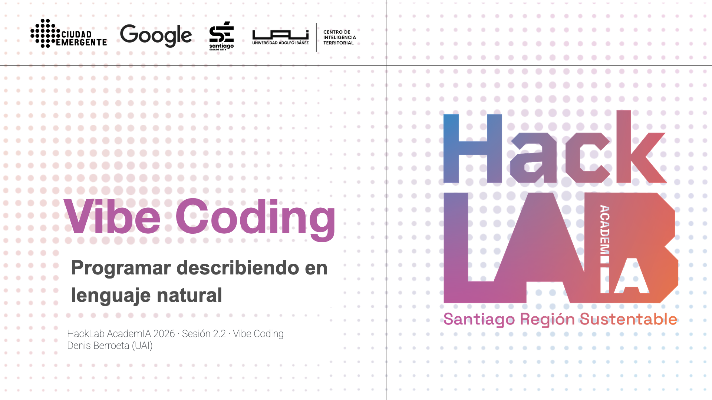
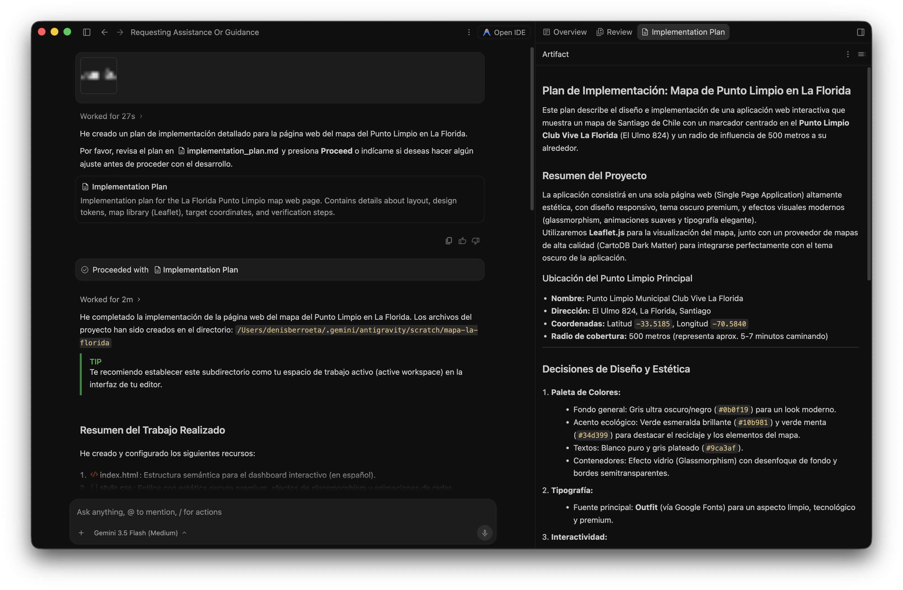
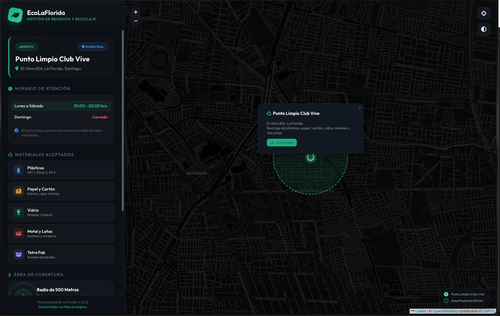
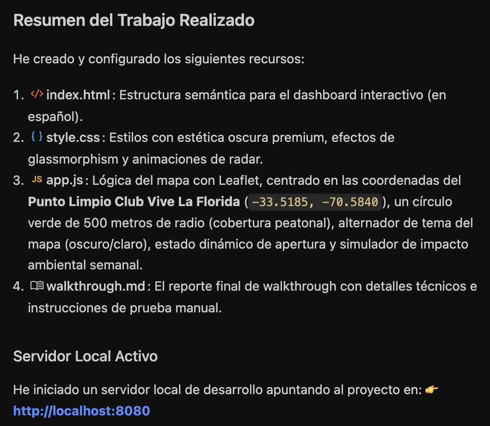
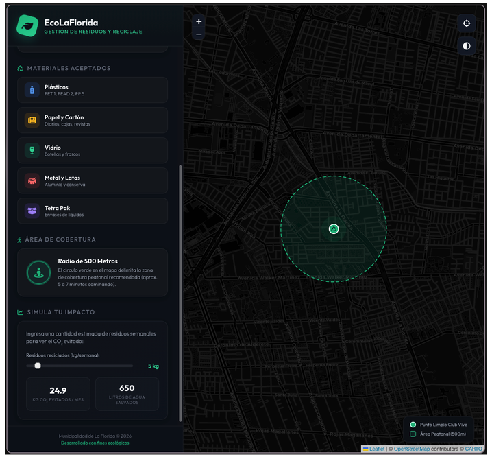
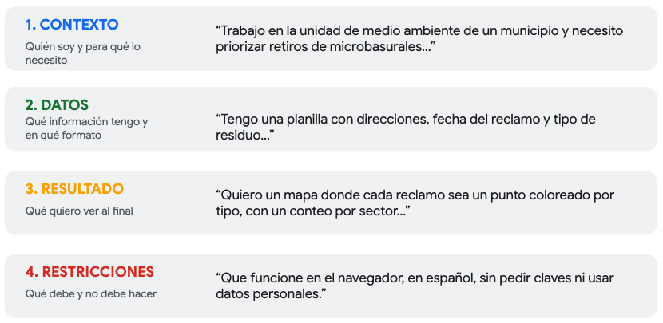

1 Vibe Coding
Programar describiendo con lenguaje natural
Sesión 2.2 · Día 2 · 1,5 horas · Modalidad Meet · Docentes: Denis Berroeta (UAI) + Pedro Mancillo
Resumen ejecutivo

Hasta hace muy poco, convertir una idea de análisis territorial en una herramienta funcional exigía saber programar o contratar a alguien que supiera. Esa barrera se está moviendo. El vibe coding, entendido como generar código mediante descripciones en lenguaje natural (Karpathy 2025), permite que una persona que conoce profundamente un problema público pueda construir un primer prototipo conversando con una IA en español.
La sesión trabaja una idea central: el teclado dejó de ser la principal barrera. La nueva barrera es saber qué pedir, qué contexto entregar, cómo evaluar lo que aparece en pantalla y cuándo desconfiar. En el marco del nuevo ciclo de vida del desarrollo de software, esta transición se describe como un paso desde la sintaxis hacia la intención: la IA puede implementar, pero la persona sigue aportando intención, contexto, criterio y verificación (Osmani, Saboo, and Kartakis 2026).
Esta sesión es la piedra angular metodológica de todo el curso: todas las sesiones posteriores (Python espacial, NLP, análisis de sentimientos e integración de datos) asumen que dominas el ciclo básico de trabajo: prompt → código → ejecución → evaluación → nuevo prompt. No se trata de aprender a programar por una vía alternativa; se trata de asumir un rol nuevo: el de director técnico de una IA que programa.
Al finalizar la sesión serás capaz de:
- Explicar qué es el vibe coding y por qué cambia quién puede construir soluciones digitales en una organización pública.
- Operar el ciclo iterativo fundamental: prompt → código → ejecución → evaluación → nuevo prompt.
- Usar Antigravity (IDE), seleccionando entre Gemini Flash y Gemini Pro según la naturaleza de la tarea.
- Redactar prompts efectivos para generar código, incluyendo contexto, datos, resultado esperado y restricciones.
- Evaluar resultados sin leer el código línea a línea, usando casos conocidos, revisión visual y contraste con los datos.
- Reconocer los límites del vibe coding: cuándo sirve para prototipar, cuándo requiere revisión y cuándo exige verificación sistemática.
Contenidos de la sesión
Presentación: Google Slides: 2.2 Vibe Coding
- El cambio de paradigma: de “saber programar” a “saber pedir”.
- Qué es un agente: percibir, planificar, actuar, observar e iterar.
- Antigravity y los modelos Gemini (Flash / Pro).
- El ciclo iterativo: prompt → código → resultado → mejora.
- La plantilla de prompt del curso: contexto, datos, resultado, restricciones.
- Manejo de errores sin pánico.
- Límites, criterio, alucinaciones y verificación proporcional al riesgo.
- Primer prompt del proyecto final del equipo.
1.1 Hoja de ruta de la sesión
| Bloque | Duración | Foco | Producto esperado |
|---|---|---|---|
| 1 | 20 min | Cambio de paradigma | Entender qué cambia cuando se programa desde la intención |
| 2 | 25 min | Antigravity y Gemini | Reproducir una demo simple con la propia comuna |
| 3 | 30 min | Ciclo iterativo | Construir y refinar una visualización en 3 iteraciones |
| 4 | 15 min | Límites y proyecto | Escribir el primer prompt del proyecto real |
La regla de la sesión es simple: nadie necesita haber programado antes. Lo que sí se necesita es observar, describir, corregir y decidir.
1.2 El cambio de paradigma
1.2.1 De “saber programar” a “saber pedir”
Durante décadas, la programación funcionó como un idioma extranjero con traductores escasos y caros: si un municipio necesitaba un mapa interactivo de sus puntos limpios, debía encontrar a alguien que “hablara código”. El vibe coding invierte esa relación: ahora la máquina puede traducir una intención escrita en lenguaje natural a código ejecutable.
En febrero de 2025, Andrej Karpathy describió esta práctica como una forma de programar en la que la persona se “entrega a las vibras”, describe lo que quiere, acepta lo que la IA produce y, cuando algo falla, pega el error para que la IA lo corrija (Karpathy 2025). La frase se volvió popular porque nombró algo que ya estaba ocurriendo: muchas personas estaban dejando de escribir cada línea de código y empezando a dirigir sistemas que escriben código.
El cambio de fondo puede resumirse así:
| Antes | Ahora |
|---|---|
| Para construir software había que escribir sintaxis exacta. | Se describe qué se necesita; la IA propone cómo implementarlo. |
| La persona que conocía el problema dependía de alguien que conocía el código. | La persona experta en el problema puede producir un primer prototipo. |
| Cada idea esperaba presupuesto, licitación o apoyo técnico escaso. | Muchas ideas pueden explorarse en minutos antes de invertir más recursos. |
| El valor estaba principalmente en escribir implementación. | El valor se desplaza hacia intención, contexto, evaluación y juicio. |
El alcalde no construye la plaza con sus manos: define qué plaza necesita el barrio, revisa los avances y evalúa si quedó bien construida. El vibe coding te pone en ese rol frente al código: tú diriges, la IA ejecuta. Lo que aportas no es técnica de construcción, sino criterio sobre qué se necesita y si el resultado sirve.
1.2.2 Principio territorial 1: la IA no conoce tu territorio
La IA puede conocer lenguajes de programación, bibliotecas y patrones de interfaz. Pero no conoce como tú la historia de una comuna, los puntos de conflicto, las restricciones políticas, las zonas donde un dato suele fallar o los nombres locales que no aparecen en los manuales.
Por eso, un prompt sin territorio produce soluciones genéricas. El contexto local es el insumo que ningún modelo trae incorporado: dónde duele, qué se intentó antes, qué es viable y qué resultado sería útil para decidir. En términos del nuevo SDLC, esta es una forma práctica de ingeniería de contexto: darle a la IA la información que necesitaría una persona nueva que llega hoy al equipo para hacer bien el trabajo (Osmani, Saboo, and Kartakis 2026).
La IA es el ejecutor. La persona experta en el territorio sigue siendo quien define el problema, entrega el contexto y valida si el resultado calza con la realidad.
1.2.3 Una historia: el ajedrez centauro
En 1997, Deep Blue derrotó a Garry Kasparov. La lectura fácil habría sido: la máquina reemplazó al campeón. Pero Kasparov propuso otra forma de jugar: humano + máquina. En el llamado “ajedrez avanzado”, el valor no estaba solo en el cálculo de la computadora, sino en la persona capaz de dirigirlo.
Posteriormente en 2005 — en un torneo abierto no ganan ni los grandes maestros ni las supercomputadoras solas … ganan dos aficionados con computadores corrientes y un MÉTODO superior para dirigirlos (Referencia).
La lección para esta sesión es directa: no gana necesariamente quien más programa, sino quien mejor dirige la capacidad de la máquina. En el trabajo público, eso significa traducir conocimiento territorial en instrucciones claras, observar el resultado y corregir el rumbo.
1.3 ¿Qué es vibe coding?
Para este curso, vibe coding significa crear programas describiendo en lenguaje natural lo que se necesita: la IA escribe el código; la persona dirige, observa y evalúa.
El ciclo mínimo tiene cinco pasos:
- Describo lo que necesito, en español.
- La IA genera código y lo ejecuta.
- Miro el resultado: mapa, tabla, gráfico, página o error.
- Pido ajustes describiendo la diferencia entre lo obtenido y lo esperado.
- Repito hasta que el resultado sirva para explorar, comunicar o decidir.
El ciclo no reemplaza el juicio profesional. Lo desplaza hacia los puntos donde más importa: especificar, evaluar y verificar.
1.3.1 Del chat al agente
Un chatbot responde y espera. Un agente trabaja en ciclo: recibe un objetivo, planifica pasos, actúa usando herramientas, observa el resultado y se corrige. El whitepaper The New SDLC with Vibe Coding describe este bucle como una secuencia de percepción, planificación, acción, observación e iteración (Osmani, Saboo, and Kartakis 2026).
Esto explica algo que verás en Antigravity: a veces la IA parece “pensar”, probar, fallar y reintentar sola. No está rota; está iterando. Tu tarea no es leer cada línea que escribió, sino mirar si el resultado cumple el objetivo y si el camino es aceptable para el nivel de riesgo de la tarea.
1.4 Demostración: de una frase a una herramienta
La demostración central de la sesión es obtener una herramienta funcionando a partir de una frase en español:
“Crea una página web que muestre un mapa de Santiago con un marcador en el punto limpio de La Florida y un círculo de 500 metros a su alrededor. Todo en español.”

El objetivo de la demo no es mostrar un truco, sino hacer visible el cambio: una persona que conoce el problema territorial puede producir un primer artefacto funcional sin empezar por la sintaxis.

Después de la demo, la pregunta importante no es “¿qué código escribió?” sino:
- ¿El marcador quedó donde debía?
- ¿El radio corresponde a lo solicitado?
- ¿El texto está en español?
- ¿El resultado sirve para explicar o decidir algo?
- ¿Qué falta para que sea útil en mi comuna?
1.5 La herramienta: Antigravity y los modelos Gemini
1.5.1 Las tres zonas esenciales del IDE
Antigravity es el entorno de trabajo (IDE) del curso. De toda su interfaz solo necesitas reconocer tres zonas:
- Zona del prompt: donde escribes lo que necesitas. Es tu lugar de trabajo principal.
- Zona del código: donde la IA escribe. Se mira de reojo; no se edita durante esta sesión.
- Zona del resultado: donde corre la herramienta. Aquí se evalúa y se decide.
El resto de la interfaz se ignora deliberadamente: está pensada para programadores y tú no necesitas dominarla para lograr el objetivo de la sesión.


1.6 La plantilla recomendada
La calidad de lo que la IA produce depende menos de palabras mágicas y más de la calidad del contexto que recibe. La pregunta correcta no es “¿cómo engaño a la IA para que lo haga bien?”, sino “¿qué necesitaría saber una persona nueva que llega hoy a mi equipo para hacer bien este trabajo?”.
La plantilla del curso tiene cuatro piezas:
- Contexto: quién soy, dónde trabajo y para qué necesito la herramienta.
- Datos: qué información tengo, en qué formato y con qué columnas o campos.
- Resultado esperado: qué quiero ver al final y cómo sabré que está bien.
- Restricciones: qué debe y no debe hacer la solución.

1.6.1 Ejemplo de prompt completo
Trabajo en la unidad de medio ambiente de un municipio y necesito priorizar retiros de microbasurales. Tengo una planilla con dirección, fecha del reclamo, tipo de residuo y comuna. Quiero un mapa donde cada reclamo aparezca como un punto coloreado por tipo, con un conteo por sector. Que funcione en el navegador, esté en español, no pida claves de acceso y no use datos personales.
1.6.2 Prompt vago versus prompt con contexto
| Prompt vago | Prompt con contexto |
|---|---|
| “Haz un análisis de los reclamos de mi comuna.” | Contexto + datos + resultado + restricciones. |
| La IA inventa supuestos para rellenar lo que no dijiste. | La IA trabaja con tu problema y tus datos. |
| El resultado puede verse profesional, pero no servir para decidir. | El resultado es más específico, evaluable y accionable. |
1.7 Iterar es el método
El primer resultado casi nunca es el final. Y eso no es un fracaso: es el método. Un primer resultado es un borrador de trabajo, como la primera versión de un informe.
La habilidad central es describir en español la diferencia entre lo que obtuviste y lo que querías:
“El mapa está bien, pero los puntos son muy pequeños y no se distinguen los tipos de reclamo. Hazlos más grandes, agrega una leyenda con los colores y muestra un conteo por categoría.”
Tres iteraciones bien descritas valen más que un prompt supuestamente perfecto. Cada iteración enseña algo sobre el problema, los datos y las limitaciones de la herramienta.
Nadie le dice al peluquero “aplica la técnica de degradado con tijera de entresacar”. Le dice “más corto a los lados, arriba déjalo como está”. Y si el resultado no convence, lo corrige mirando el espejo: “un poco más corto atrás”. Con la IA es igual: describes el cambio que ves necesario, no la técnica para lograrlo.
1.8 Cuando algo falla
Cuando algo falla, la pantalla puede mostrar texto rojo o un mensaje que parece escrito en otro idioma. La respuesta del curso es un reflejo simple:
- Copia el mensaje de error completo.
- Pégaselo a la IA.
- Pide una explicación simple y una corrección.
- Mira nuevamente el resultado.
Prompt de reparación:
“Apareció este error: [pegar mensaje completo]. Explícame en simple qué pasó y corrígelo sin cambiar el objetivo de la herramienta.”
El error deja de ser un muro y pasa a ser un mensaje más de la conversación. Aun así, no todos los errores son visibles: algunos resultados se ven correctos y están mal calculados. Por eso la siguiente sección es tan importante.
1.9 Límites y criterio
1.9.1 El problema del 80%
La IA puede producir rápido el 80% de una solución: una interfaz que se ve bien, un mapa que carga, una tabla ordenada, un gráfico convincente. El 20% restante, es decir, casos raros, datos sucios, supuestos invisibles, restricciones locales y decisiones de uso, es exactamente donde entra el criterio profesional.
El whitepaper de SDLC lo plantea como una diferencia entre vibe coding y prácticas más estructuradas: para un prototipo puede bastar con que algo parezca funcionar; para software o análisis en los que una organización depende del resultado, se necesitan pruebas, revisión, restricciones y supervisión humana (Osmani, Saboo, and Kartakis 2026).
1.9.2 No todo se “vibra”: espectro de confianza
| Uso | Nivel de confianza aceptable | Verificación mínima |
|---|---|---|
| Explorar / prototipar | Vibe coding rápido: “parece que funciona” puede bastar. | Revisión visual y sentido común territorial. |
| Analizar / informar | Revisión selectiva: no basta con que se vea bien. | Validar cifras, muestras y supuestos. |
| Decidir / publicar | Verificación sistemática. | Contrastar datos, revisar metodología y documentar fuentes. |
La pregunta clave no es “¿usé IA?”, sino “¿cómo verifiqué lo que produjo?”.
1.9.3 Tres reglas de verificación para no programadores
- Prueba siempre con un caso cuyo resultado ya conoces. Si sabes que tu comuna tiene cerca de 14 puntos limpios y el mapa muestra 3, algo anda mal.
- Desconfía de cifras y nombres que no salieron de tus datos. Si la IA cita totales, lugares o fuentes que no le entregaste, pídele el origen o descártalo.
- Nunca uses datos personales o sensibles reales en estos ejercicios. Nombres, RUT, teléfonos, direcciones exactas y casos identificables se quitan antes de procesar. Esta dimensión se profundiza en el Módulo 3.
1.9.4 Alucinaciones: plausibilidad no es verdad
Una alucinación ocurre cuando la IA completa vacíos con información plausible pero falsa. El riesgo es mayor cuando el resultado “suena” bien o se ve profesional. En gestión pública, una cifra inventada en una minuta, un nombre de programa inexistente o una ubicación mal asignada pueden producir decisiones equivocadas.
La postura profesional es usar la IA para lo que hace bien: proponer, generar, ordenar y prototipar. La atención humana se reserva para lo que hace peor: contexto local, casos límite, verificación y responsabilidad.
1.10 Actividades
1.10.1 Ejercicio 1: tu comuna, tu primer prompt
Adapta la demostración a tu territorio:
“Crea una página web que muestre un mapa con un marcador en [un lugar importante de TU comuna] y un círculo de [500] metros a su alrededor. Todo en español.”
Cuando funcione, realiza una iteración: cambia el radio, el lugar, el color del círculo o el texto visible. Una mejora concreta cuenta como éxito.
Verifica:
- ¿El marcador quedó realmente sobre el lugar correcto?
- ¿El círculo tiene sentido para la escala del barrio?
- ¿El mapa está en una zona reconocible para ti?
- ¿Qué corregirías antes de mostrarlo a otra persona?
1.10.2 Ejercicio 2: de la planilla al mapa, en 3 iteraciones
Usa el dataset del curso de puntos de interés comunales de la Región Metropolitana (plazas, consultorios, sedes vecinales y puntos limpios). Trabaja en equipos y produce una visualización refinada en al menos tres iteraciones:
- Iteración 1: carga la planilla y muestra los puntos en un mapa.
- Iteración 2: mejora algo sustantivo: colores por tipo, tamaños, filtros por comuna o etiquetas.
- Iteración 3: hazlo presentable: título, leyenda en español, conteo por categoría y una lectura clara.
Usa la plantilla completa: contexto, datos, resultado y restricciones. Guarda los prompts que funcionaron. Son capital de trabajo para la sesión 3.1.
1.10.3 Cierre: el primer prompt de tu proyecto
Cada equipo escribe, aunque todavía no lo ejecute, el primer prompt de su problemática real:
- Contexto: quiénes somos y qué problema territorial queremos abordar.
- Datos: qué tenemos hoy, aunque sea una planilla incompleta o desordenada.
- Resultado: qué querríamos ver en pantalla.
- Restricciones: qué no debe pasar, qué datos no se pueden usar y qué supuestos deben respetarse.
Ese prompt es la semilla de la hoja de ruta final. En la sesión 3.1 se retomará con datos reales del territorio.
1.11 Resumen
- El vibe coding cambia la pregunta de “¿quién sabe programar?” a “¿quién sabe qué se necesita?”.
- La IA no conoce tu territorio: tu contexto local es el insumo más importante.
- El ciclo de trabajo permanente es prompt → código → ejecución → evaluación → nuevo prompt.
- Un buen prompt incluye contexto, datos, resultado esperado y restricciones.
- Empieza con Gemini Flash; sube a Pro cuando el problema tenga muchas partes o requiera razonamiento más cuidadoso.
- Ante un error: copiar, pegar, pedir explicación y corrección.
- No todo se “vibra”: prototipar, informar y decidir requieren niveles distintos de verificación.
- Generar código ya está resuelto. Dirigir, evaluar y decidir es el nuevo oficio.
1.12 Recursos
- Guía de preparación previa: creación de cuenta Google, activación de créditos, instalación de Antigravity y prueba de acceso.
- Plantilla de prompt del curso: Contexto / Datos / Resultado esperado / Restricciones, con ejemplos territoriales.
- Lectura opcional: The New SDLC with Vibe Coding, para profundizar en el paso desde vibe coding hacia ingeniería agéntica, verificación, contexto y nuevos roles humanos en el desarrollo de software (Osmani, Saboo, and Kartakis 2026).